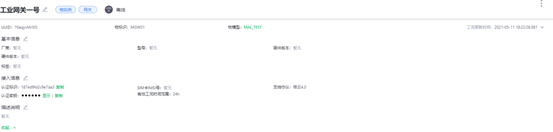
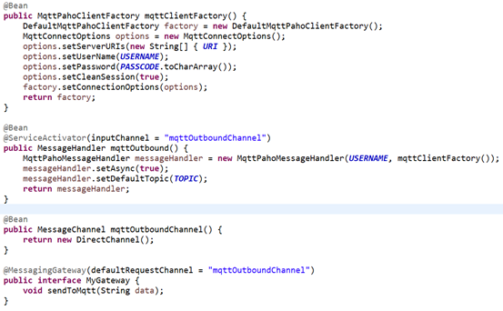
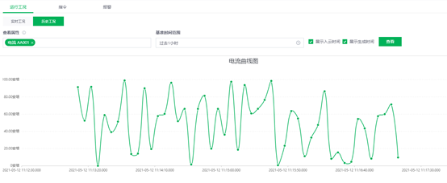
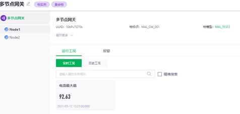
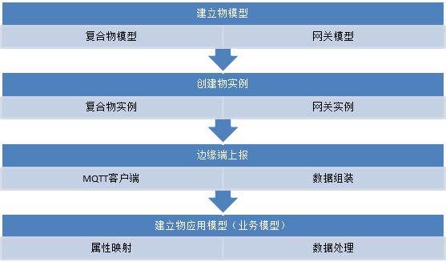

根云平台初体验
公司目前的产品偏重于边缘数采和边缘计算，对于规模较大的客户大多需求接入现有的工业互联网平台实现数据统筹管理。
本文从根云互联网平台（以下简称平台）切入，研究边缘一体机接入平台的可行性。
在正式开始之前需要先了解平台关于建模的高层设计。通过控制台进入后可以看到在左侧的物菜单下有物模型、物实例和模型模板库三个子菜单。

结合介绍文档和页面功能，我们可以总结出平台关于物建模的高层设计。

- 物模型是物理设备的高层次抽象，定义物理设备通用的属性和行为
- 物实例是物模型的具体实现，对应现实设备或者网关
- 模型模板库是物模型的行业知识库，用于快速创建物模型
设备建模
物模型
基于平台关于建模的设定，我们首先建立我们的物模型。选择物模型类型为网关，填入基本信息即可创建成功。

为物模型添加一个变量标识为AA001对应电流接入。

物实例
物模型建立完成后就可以基于物模型创建物实例了。
连接验证
在设备建模完成后，我们可以通过MQTT网页测试工具向平台发送实时数据。
测试地址：https://developer-pre.rootcloudapp.com/docs/resource/mqtt-api-test/
建立连接

相关页面输入如下所示，
服务器地址：mqtt-broker-pre.rootcloudapp.com
Username和clientId : xxxxxxx（通过物实例页面获取到的认证标识）
端口：8084
Password：xxxx（通过物实例页面获取到的认证密钥）
发布数据
连接建立成功后可以通过发布功能发布数据到平台。

其中发布的主题是：v4/p/post/thing/live/json/1.1。发布的内容根据需求定义，具体字段可以查看文档：
1 | { |
例如以上报文中我们需要关注几个部分，其中thingType可以选择Device和Gateway，选择Gateway时，id为空字符串即可。ts对应上报的时间戳，properties中的AA001就是我们在物模型中定义的属性名。
发送完之后我们在物实例中可以看到AA001对应的电流的实时值为13。

代码测试
我们还可以模拟MQTT的客户端进行连接后向平台发送数据。在客户端程序中需要建立连接，模拟数据格式和发送数据。在客户端选型上我们选择了eclipse paho，使用spring-integration-mqtt进行客户端封装。
如代码所示，通过暴露的MyGateway接口发送消息到管道，管道接收了消息之后通过创建客户端将消息发送到目标主题。
发送一段时间后在平台端可以看到AA001的变化趋势。
业务验证
基于边缘端拓扑结构，我们在平台进行建模如下：

首先一个节点对应一体机，在一体机上安装一个MQTT客户端发送数据到平台的MQTT队列。平台侧通过部署一个多节点网关对多个节点进行管理。呈现效果如下：
总结
通过连接验证，我们确认了可以通过边缘程序发送数据到MQTT队列并在平台进行展示的可行性。通过业务验证，我们将边缘端的设备结构和物模型进行匹配，实现了一个网关对应一台边缘智能机并通过复合物进行统一管理的实现路径。
